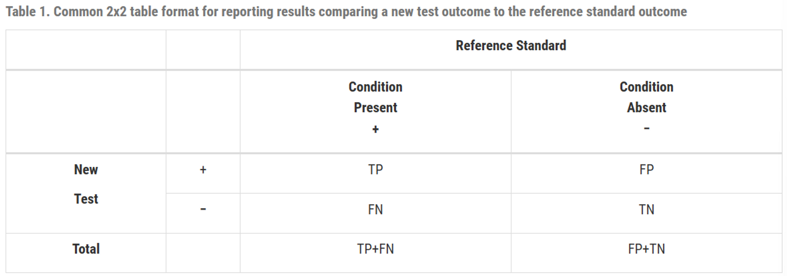
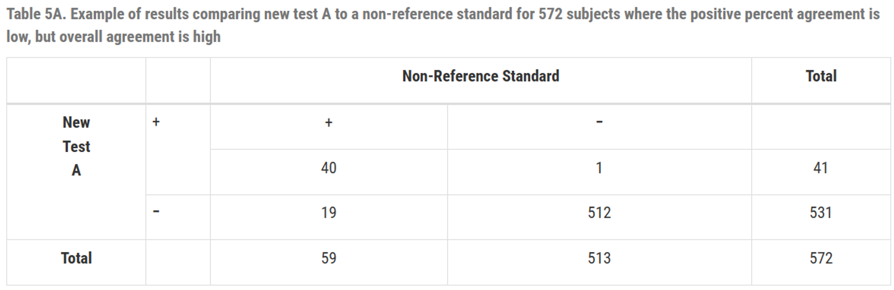

진단 검사 평가 연구 결과 보고에 대한 통계적 지침 (FDA) Part 2
투명한 보고와 부적절한 관행에 대한 권고
FDA는 진단 검사 평가 시 부적절한 통계 관행을 피하고 모든 데이터를 투명하게 공개할 것을 강력히 권고합니다 (U.S. Food and Drug Administration 2007).
1. 지침 기반 권장 보고 사항
진단 검사를 평가하는 연구에서는 다음 원칠에 근거하여 결과를 투명하게 보고해야 합니다.
(1) 연구 맥락 보고 (Reporting Study Context)
민감도와 특이도는 연구 모집단 및 설계의 맥락에 따라 달라질 수 있습니다.
- 의도된 사용군 (Intended Use Population): 실제 제품의 타겟이 되는 대상 집단.
- 연구 집단 (Study Population): 연구에 참여한 피험자의 주된 특성.
- 참조 표준 (Reference Standard): 기준점의 정의 및 선택 근거와 한계점 기술.
(2) 사용 조건 및 환경 정의
- 수행자의 숙련도 및 경험 (Operator Experience)
- 실제 실험 환경 및 기기 관리 상태 (Test Setting)
- 품질 관리(QC) 절차 및 표본 승인 기준
2. 지양해야 할 통계적 관행 (Improper Practices)
(1) 부적절한 용어 사용
비-참조 표준(Non-reference Standard)과 비교할 경우 ‘민감도/특이도’ 대신 ‘양성/음성 퍼센트 일치도(PPA/NPA)’를 사용해야 합니다.
(2) 불일치 해결(Discrepant Resolution)을 통한 데이터 수정
두 검사법이 일치하지 않을 때 제3의 검사법(Resolver)을 사용하여 기존 결과를 수정하는 행위는 과학적 타당성이 부족하며 연구 결과를 지나치게 낙관적으로 만들 수 있습니다.
(3) 모호한 결과(Equivocal Results)의 편의적 분석
미확정된 결과를 단순히 분석에서 제외하면 성능 데이터가 편향되므로, 이를 양성이나 음성 중 하나로 간주했을 때의 각각의 영향(Worst-case 등)을 함께 보고해야 합니다.
3. 요약: 통계 계산 방법
진단 성능 지표는 2x2 분할표를 기본으로 하며, 반드시 95% 신뢰구간(CI)과 함께 제시되어야 합니다.
(1) 참조 표준 기반 산출
- 민감도: \(\frac{TP}{TP + FN}\)
- 특이도: \(\frac{TN}{FP + TN}\)
(2) 비-참조 표준 기반 산출 (일치도)
- 양성 퍼센트 일치도 (PPA): \(\frac{a}{a+c}\)
- 음성 퍼센트 일치도 (NPA): \(\frac{d}{b+d}\)
- 전체 퍼센트 일치도 (OPA): \(\frac{a+d}{a+b+c+d}\)


4. 결론
진단 기기 승인을 위한 핵심은 모든 결과 데이터를 투명하게 공개하고, 적절한 통계 지표와 신뢰구간을 통해 그 성능을 입증하는 데 있습니다.